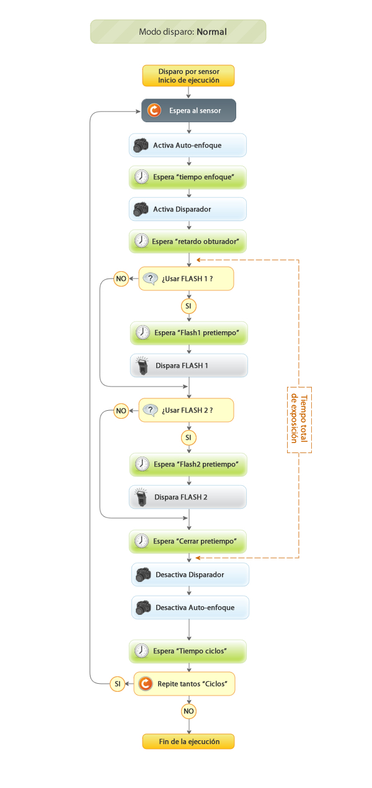
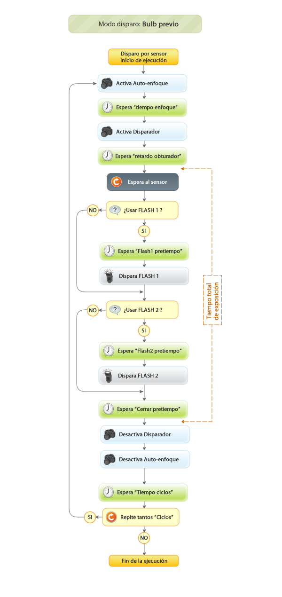
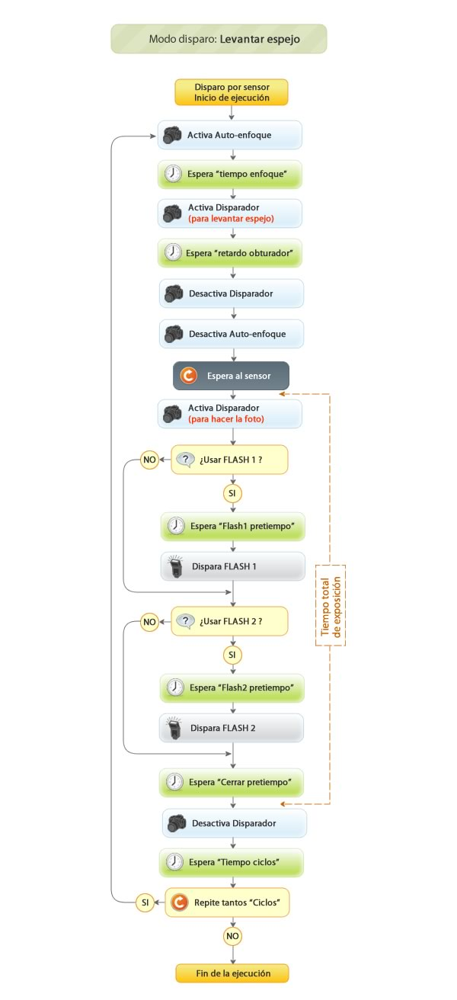

Este modo de ejecución es usado para tomar fotografías basadas en la lectura de los sensores. Principalmente es útil para “Fotografía de Alta Velocidad” y para “Fotografía de naturaleza”.
Opciones
Cuando entres en esta opción del menú principal, encontrarás las siguiente sub-opciones.
- Config Disparo: Define los parámetros de este modo usados en el “Ciclo de vida de ejecución”
- Config Gotas: Solamente si el “Tipo de dispositivo” en la “Configuración del sistema” es “Electroválvula”.
- Ejecutar: Ejecuta el modo de acuerdo al “Ciclo de vida de ejecución”. Para cancelar la ejecución, mantén presionado uno de los dos botones hasta que en la pantalla aparezca “Cancelando…”
- Borrar config: Esta opción devolverá todos los parámetros de configuración del modo a sus valores por defecto.
Config Disparo
| Parámetro | Valores | Función |
|---|---|---|
| Sensor |
|
Define el tipo de sensor que será usado por el modo de ejecución. |
| Limite sensor |
|
Define el limite del sensor. El modo de ajuste viene definido por el parámetro “Ajuste de sensores” de la “Configuración de sistema“ |
| Modo disparo |
|
Define el modo de disparo usado más adelante por el “Ciclo de vida de ejecución”. |
| Tiempo enfoque |
|
Tiempo en milisegundos usado para el autoenfoque de la cámara. Solamente es necesario si la cámara está en modo AF. Si la cámara está en enfoque manual, este valor debe ser 0. |
| Pretiempo Flash1 |
|
Tiempo en milisegundos a esperar antes de disparar el FLASH1. |
| Pretiempo Flash2 |
|
Tiempo en milisegundos a esperar antes de disparar el FLASH2. |
| Pretiempo Cerrar |
|
Tiempo en milisegundos a esperar antes de cerrar el obturador. |
| Ciclos |
|
Número de veces que se debe repetir el ciclo de ejecución. Cero equivale a infinitas repeticiones. |
| Pretiempo ciclos |
|
Tiempo en milisegundos a esperar entre cada ciclo. Este parámetro es sobretodo usado para dejar tiempo suficiente a la cámara para procesar la imagen final. |
Config Gotas
El “Ciclo de vida de ejecución no muestra esta funcionalidad de “Gotas”, pero las gotas son generadas siempre antes de los bloques “Esperar al sensor” en el diagrama.
Estos parámetros son usados solamente si una electroválvula está conectada al puerto DEVICE y el tipo de dispositivo está configurado como “Electroválvula” en la “Configuración del sistema“.
| Parámetro | Valores | Función |
|---|---|---|
| Número de gotas |
|
Número de gotas a generar |
| Duración gota |
|
Tiempo en milisegundos que dura cada gota. |
| Intervalo gotas |
|
Tiempo en milisegundos entre cada gota. |
Ciclo de vida de ejecución
El ciclo de vida de ejecución es el diagrama que explica la ejecución y como cada parámetro es usado cuando se ejecuta el modo “Disparo por sensor”.
Existen tres ciclos de ejecución. Cada uno depende del “Modo de disparo” configurado en “Config Disparo”.
- Modo Normal
- Modo Bulb previo
- Modo Levantar espejo
Modo de disparo: Normal
Este modo está pensado para tomar fotografías iniciando el proceso por un sensor pero usando el modo normal de funcionamiento de la cámara para tomar la foto. Si quieres ahorrarte los retardos mecánicos de modo convencional de funcionamiento de la cámara para realizar fotos de alta velocidad, debes usar el modo “Bulb previo” o el modo “Levantar espejo” descritos más adelante.

Modo de disparo: Bulb previo
En este modo, el sistema asume que tienes configurada tu cámara en modo BULB y podrás usar uno o dos flashes para realizar la foto en una habitación a oscuras. Usando este modo evitarás todos los retardos mecánicos producidos por la cámara y tomar las fotografías con mayor tiempo de respuesta y con el tiempo de exposición más corto, definido por la duración del destello del flash que estás usando.

Modo de disparo: Levantar espejo
Tu cámara debe tener una opción interna para levantar el espejo antes de disparar el obturador, evitando retardos mecánicos. Usa este modo en combinación con la opción en tu cámara para que Photoduino levante automáticamente el espejo antes de esperar al sensor y realiza las fotos tan rápido como es posible y evita las vibraciones en tu cámara cuando la foto es tomada.

Notas importantes
Si la cámara no está configurada en modo BULB, el tiempo de exposición total será entonces el indicado por la velocidad de obturación seleccionada en la cámara.
Si la cámara está configurada en enfoque automático el tiempo necesario para enfocar dependerá de la escena, dandose la posibilidad de que no se dispare el obturador por falta de enfoque.